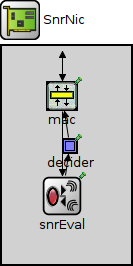
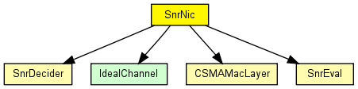
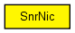

This is the easiest nic to implement "real" network behaviour. It uses the CsmaMacLayer and the SnrDecider and SnrEval modules.
The csma mac provides basic medium access and is used here to prevent a host from trying to send a message while it is still in receive mode.
The phy layer modules allow to account for collision and take fading into account so that messages can actually be lost.
IMPORTANT:
In order to work with the ChannelControl module the snrEval
module has to be called "snrEval" in the ned file.
This component has been taken over from Mobility Framework 1.0a5.
See also: BasicMacLayer, SnrDecider, SnrEval
Author: Daniel Willkomm
The following diagram shows usage relationships between types. Unresolved types are missing from the diagram. Click here to see the full picture.
The following diagram shows inheritance relationships for this type. Unresolved types are missing from the diagram. Click here to see the full picture.
| Name | Value | Description |
|---|---|---|
| display | i=block/ifcard |
| Name | Direction | Size | Description |
|---|---|---|---|
| uppergateIn | input |
to upper layers |
|
| uppergateOut | output |
from upper layers |
| Name | Type | Default value | Description |
|---|---|---|---|
| mac.debug | bool | false |
debug switch |
| mac.headerLength | int | ||
| mac.queueLength | int | ||
| decider.debug | bool | false |
debug switch |
| decider.snrThresholdLevel | double | ||
| snrEval.channelNumber | double | 0 |
channel identifier |
| snrEval.debug | bool | false |
debug switch |
| snrEval.transmitterPower | double | ||
| snrEval.bitrate | double | ||
| snrEval.headerLength | int | ||
| snrEval.thermalNoise | double | ||
| snrEval.pathLossAlpha | double | ||
| snrEval.sensitivity | double |
// This is the easiest nic to implement "real" network behaviour. It uses // the CsmaMacLayer and the SnrDecider and SnrEval modules. // // The csma mac provides basic medium access and is used here to prevent a // host from trying to send a message while it is still in receive mode. // // The phy layer modules allow to account for collision and take fading into // account so that messages can actually be lost. // // IMPORTANT:<br> In order to work with the ChannelControl module the snrEval // module has to be called "snrEval" in the ned file. // // This component has been taken over from Mobility Framework 1.0a5. // // @see BasicMacLayer, SnrDecider, SnrEval // // @author Daniel Willkomm // module SnrNic { parameters: @display("i=block/ifcard"); gates: input uppergateIn; // to upper layers output uppergateOut; // from upper layers submodules: mac: CSMAMacLayer { parameters: @display("p=60,50;b=32,30"); } decider: SnrDecider { parameters: @display("p=68,100;b=16,16;o=white"); } snrEval: SnrEval { parameters: @display("p=60,150;b=32,30"); } connections: decider.uppergateOut --> { @display("m=m,50,50,75,0"); } --> mac.lowergateIn; snrEval.uppergateIn <-- { @display("m=m,25,0,25,0"); } <-- mac.lowergateOut; snrEval.uppergateOut --> { @display("m=m,73,0,50,50"); } --> decider.lowergateIn; mac.uppergateOut --> uppergateOut; mac.uppergateIn <-- uppergateIn; }